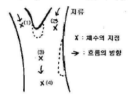

수산양식산업기사 (2007-08-05 기출문제)
1과목: 어류양식
1. 다음 중 양식용 가두리를 수심이 가장 깊은 곳에 설치해야 하는 어종은?
- 참돔
- 방어
- 잉어
- 뱀장어
(정답률: 50%)

2. 봄철 방어 치어를 채포·수집하여 수용시 제일 우선되는 작업은?
- 먹이를 준다
- 선별하여 수용한다.
- 소독약으로 예방치료를 한다.
- 배설물을 제거한다.
(정답률: 100%)
3. 넙치를 사육하고자 한다. 사육 적수온 및 용존 산소 범위 내에서 순간성장율을 최대로 할 수 있는 적정사육밀도는 체표면적비의 몇 배인가?
- 1배
- 2배
- 3배
- 4배
(정답률: 70%)
4. 잉어의 유수양식에서 여름철 1일당 적정 사료 공급횟수는?
- 1~2회
- 5~10회
- 10~15회
- 25회 이상
(정답률: 82%)
5. 하루 중에서 잉어가 주로 산란을 하는 시기는?
- 자정을 전후해서
- 새벽부터 오전 중에
- 오후에서 일몰 전에
- 일몰 후 초저녁에
(정답률: 93%)
6. 다음 중 송어의 알 부화시 최적 수온은?
- 6~8℃
- 13~15℃
- 16~18℃
- 9~11℃
(정답률: 알수없음)
7. 실뱀장어의 최대 소상(遡上)조건을 바르게 설명한 것은?
- 대조시 만조
- 조금 때나 간조
- 맑은 날 오전
- 일출과 일몰시
(정답률: 93%)
8. 은어 자어의 사육방법에 대한 설명 중 틀린 것은?
- 부화 자어의 초기 생존율은 담수에서는 낮고, 기수 또는 해수에서는 높으므로 기수나 해수를 이용할 수 있도록 준비해야 한다.
- 기수를 사용할 때에는 인공해수 또는 해수를 희석하여 순환여과식으로 하고, 해수를 사용할 때에는 유수식으로 사육한다.
- 기수순환여과식에서는 염분 4~6%의 인공 해수를 사용하고, 치어가 0.5g 정도 자랐을 때 한 번에 완전히 담수로 바꾼다.
- 초기의 사육 적수온은 15~20℃ 이고 조도는 5000록스 이하로 유지해야 하며 너무 밝으면 생존율이 떨어진다.
(정답률: 82%)
9. 일반적으로 뱀장어는 어느 정도의 상품크기를 기준으로 하여 성장시키는가?
- 80~100g
- 100~120g
- 150~200g
- 250~300g
(정답률: 100%)
10. 양식사업을 시작하기 위한 기본 요소를 검토함에 있어서 가장 먼저 고려해야 할 요소는?
- 생산 생물의 경제성
- 생물의 성장도
- 생물의 내병성
- 사료 효율
(정답률: 92%)
11. 뱀장어 양식에서 양중물이란 몇 g의 뱀장어를 말하는가?
- 10g 미만
- 10~30g
- 40~50g
- 60~70g
(정답률: 93%)
12. 일반적으로 어류의 인공종묘생산으로 로피퍼의 먹이로 가장 많이 사용되는 식물플랑크톤은?
- 키토세롤스(Chaetoceros)
- 클로렐라(Chlorella)
- 모노프리시스(Monochrysis)
- 나비큘라(Navicula)
(정답률: 95%)
13. 은어 양식장의 조건으로서 적합하지 않은 것은?
- 15~25℃의 적수온
- 1ℓ당 2~3mL의 용존산소량
- pH 7~8
- 수중의 암모니아 함량이 낮은 곳
(정답률: 91%)
14. 다음 중 가두리 양식장의 조건으로 바람직한 곳은?
- 조용하고 작은 수면으로 물의 흐름이 없는 곳
- 유기물질이 풍부한 부영양의 호수
- 수량이 풍부하고 물의 흐름이 아주 빠른 곳
- 깊고 넓은 곳으로 빈영양의 수면으로 물의 흐름이 느린 곳
(정답률: 71%)
15. 다음 중 넙치의 양성 적수온 범위는?
- 5~10℃
- 15~26℃
- 28~32℃
- 11~14℃
(정답률: 100%)
16. 금붕어의 초기 선별 기준으로 가장 좋은 것은?
- 체색
- 두장/체장
- 체고/체장
- 꼬리형태
(정답률: 75%)
17. 해산어류의 종묘생산과정에서 Baker's Yeast 로 배양한 로티퍼를 먹이로 공급하는 경우 나타날 수 있는 현상에 해당되지 않는 것은?
- 자극에 대한 반응이 완만하고 복부가 팽만해짐
- 기형어가 출현함
- 포식력이 높아져 성장이 빨라짐
- 활력저하로 대량 폐사를 일으킴
(정답률: 100%)
18. 어류의 인공수정 방법 중에서 정자의 양이 적은 경우 흔히 쓰이는 방법은?
- 건식법
- 습식법
- 침지법
- 등조법
(정답률: 91%)
19. 해산 어류 중 양식장의 수온이 10℃ 이하이거나 28℃이상의 환경에서 양식장 저면의 사니질속에 매몰하는 습성이 있는 어종은?
- 방어
- 꽁치
- 자주복
- 참돔
(정답률: 84%)
20. 생물학적으로 가장 활성이 있으며 부족시 성장부진, 등여윔, 안구돌출, 빈혈, 복수종, 지방간을 일으키는 비타민은?
- Thiamin
- Tocopherol
- Choline
- Biotin
(정답률: 86%)
2과목: 무척추동물양식
21. 저질에 잠입 생활하는 조개류의 잠입 깊이와 관계가 가장 밀접한 것은?
- 수관
- 족사
- 저질
- 아가미
(정답률: 71%)
22. 따개비가 많은 곳에서 굴을 채묘할 경우 부착치패수의 조사과정에서 채묘에 가장 적합한 시기는?
- 굴의 부착수는 증가하고 따개비의 부착수가 줄어들 때
- 따개비의 부착수가 전혀 보이지 않을 때
- 굴의 부착수가 줄어들기 시작할 때
- 따개비와 굴의 부착수가 같이 증가하는 시기
(정답률: 알수없음)
23. 피조개의 발생 시 부유생활 기간은? (단, 수온 20℃ 내외)
- 1주
- 2주
- 3주
- 4주
(정답률: 86%)
24. 다음 중 제방식 양성법으로 많이 양성하는 것은?
- 가리비
- 대하
- 백합
- 우렁쉥이
(정답률: 90%)
25. 귀매달기 수하 방법으로 양식하는 패류는?
- 진주담치
- 가리비
- 대합
- 키조개
(정답률: 알수없음)
26. 다음 중 팔로소아(phyllosoma)의 부유 유생기를 갖는 종류는?
- 꽃게
- 대하
- 우렁쉥이
- 닭새우
(정답률: 86%)
27. 좁쌀무늬조개(Domax semigranosus)가 살고 있는 천해에서 양식하기에 가장 알맞은 종류는?
- 새고막
- 키조개
- 진주담치
- 라마르크대합
(정답률: 80%)
28. 두토막눈썹참갯지렁이의 식성으로 가장 적합한 것은?
- 육식성
- 초식성
- 유기물식성
- 포식성
(정답률: 92%)
29. 진주담치의 수하양성에서 성장에 현저한 차이가 생겨 크기가 일정하지 않게 되는 이유는?
- 조류의 소통이 잘 되기 때문에
- 영양이 풍부하기 때문에
- 사육조건이 양호하기 때문에
- 양성기간 동안 계속해서 치패가 부착하기 때문에
(정답률: 알수없음)
30. 우리나라의 해역 중 연중 수온이 높이 일반적으로 산란시기가 빠르고 그 기간이 긴 조건의 환경으로 가장 적합한 곳은?
- 동해
- 서해
- 남해
- 황해북부
(정답률: 82%)
31. 조개류의 종묘 생산시에 사용되는 먹이생물을 배양할 때 가장 좋은 배양법은?
- 순종배양
- 동조배양
- 혼합배양
- 개방배양
(정답률: 91%)
32. 진주양식에서 화장양성장을 가장 잘 설명한 것은?
- 진주질의 분비가 빠른 곳
- 진주의 색이나 광택이 우수한 곳
- 모패의 성장이 아주 빠른 곳
- 모패의 육질 비만이 우수한 곳
(정답률: 92%)
33. 다음 중 상자형 가두리에서 양식하기에 가장 적합한 것은?
- 보리새우
- 문어
- 꽃게
- 우렁쉥이
(정답률: 알수없음)
34. 사육조건이 좋은 경우의 참전복 유생의 부유기간으로 가장 적합한 것은?
- 12일 내외
- 9일 내외
- 6일 내외
- 3일 내외
(정답률: 50%)
35. 대하의 산란 성기는?
- 2~3월
- 4~5월
- 6~7월
- 8~9월
(정답률: 50%)
36. 가장 알맞은 방양 참가리비의 수확은 몇 년생인가?
- 2~3년
- 3~4년
- 4~5년
- 1~2년
(정답률: 알수없음)
37. 동남참게 종묘생산시 윤충류를 공급하기 시작하는 시기는?
- 조에아 1기
- 조에아 2기
- 조에아 3기
- 조에아 4기
(정답률: 50%)
38. 보리새우의 유생기 중 먹이를 공급할 필요가 없는 때는?
- 노플리우스
- 조에아
- 미시스
- 포스트라바
(정답률: 91%)
39. 다음 중 인공 수정이 습식법으로만 수정시키고 있는 어종은?
- 보리새우
- 전복
- 꽃게
- 수랑
(정답률: 70%)
40. 6월 중순 이후에 수술할 진주조개의 모패는 알 빼기를 해주어야 한다. 알 빼기를 위한 산란유발 자극으로 사용되고 있는 방법이 아닌 것은?
- 온도 자극
- 복부 절개
- 비중 자극
- 족사 끊기
(정답률: 70%)
3과목: 해조류양식
41. 조가비에서 김의 포자방출을 억제시킬 수 있는 방법이 아닌 것은?
- 비중을 1,040~1,⑤0 으로 올려 10일 정도 고비중 처리한다.
- 조가비를 들어내어 물에 젖은 채로 다른 용기에 넣고 100% 습도를 유지한다.
- 광선을 완전히 차단하여 암흑 속에 조가비를 둔다.
- 배양수 수온을 10~20℃로 유지시켜 둔다.
(정답률: 알수없음)
42. 김 엽체의 병든 부분을 현미경으로 보면 균사가 김세포를 뚫고 종횡으로 뻗어나고, 김세포 내용은 죽어서 수축하였으며, 색깔은 적자색에서 청록색, 백색으로 변하는 김의 병명은?
- 붉은갯병
- 호상균병
- 녹반병
- 흰갯병
(정답률: 73%)
43. 김의 광합성에서 보상점은 얼마인가?
- 3~5 lx
- 30~50 lx
- 300~500 lx
- 3000~5000 lx
(정답률: 67%)
44. 다음 중 어장 10000m2(1ha)를 기준으로 하였을 때 미역양식시설의 적정 시설기준으로 가장 적합한 어미줄의 길이는 약 얼마인가?
- 500m
- 1000m
- 1500m
- 2000m
(정답률: 54%)
45. 다음 중 김의 생리적인 갯병이 아닌 것은?
- 흰갯병
- 녹반병
- 싹갯병
- 암종병
(정답률: 알수없음)
46. 뜸발에 사용할 김 씨발의 유아가 육안적으로 보일 정도의 크기라면 1cm에 어는 정도 착생한 것이 가장 좋은가?
- 20~30개
- 100~200개
- 200~300개
- 500~1000개
(정답률: 60%)
47. 다음 중 감태를 원료로 하여 주로 추출하는 것은?
- 알긴산
- 한천
- 구충제
- 캐러기닌
(정답률: 알수없음)
48. 참다시마의 솎음을 일시에 너무 많이 하게 되면 서로 경쟁하지 않으므로 적당히 솎아 주어야 한다. 4~5월 경에는 1m당 몇 개체가 남도록 해야 하는가?
- 2~5개
- 12~15개
- 25~50개
- 250~500개
(정답률: 92%)
49. 다음 중 식용 풀가사리의 채취에 대한 내용으로 가장 적합한 것은?
- 조체가 충분히 성장한 포자방출성기에 채취한다.
- 조가비 등으로 바닥을 고루 긁어서 채취한다.
- 조체가 충분히 자란 성숙한 조체부터 차례로 채취한다.
- 성숙기가 되기 직전에 채취해야 한다.
(정답률: 39%)
50. 다음 중 영양번식력이 강하여 자리바꿈에 가장 우세한 것은?
- 참김
- 둥근돌김
- 방사무늬돌김
- 모무늬돌김
(정답률: 100%)
51. 다시마 양식의 솎음에 대한 내용으로 가장 올바른 것은?
- 큰 것부터 차례로 솎아낸다.
- 처음부터 너무 많이 솎아내면 경합이 없어서 성장이 나쁘다.
- 성장이 끝난 것부터 차례로 솎아준다.
- 초기에 완전히 솎아 주어야 좋다.
(정답률: 42%)
52. 다음 중 엽록소 a와 c를 가지는 해조류는?
- 녹조류
- 갈조류
- 홍조류
- 남조류
(정답률: 58%)
53. 톳 증식을 위한 씨 뿌림의 대상이 되는 생식 세포는?
- 유주자
- 수정난
- 배
- 접합자
(정답률: 84%)
54. 파래를 김밭에서 구제하는 방법과 가장 거리가 먼 것은?
- 담수처리
- 건조처리
- 냉장처리
- 저노출처리
(정답률: 알수없음)
55. 양식 김의 야외 인공 채묘시 패각 시상체를 비닐 주머니에 달아서 매는 가장 큰 이유는?
- 패각을 절약하기 위해서
- 패각의 건조를 방지하기 위해서
- 패각의 유실과 손상을 막기 위해서
- 패각의 각포자낭 성숙을 균일하게 하기 위해서
(정답률: 83%)
56. 미역의 포자엽 고르기에 대한 설명 중 틀린 것은?
- 가급적 크고 두꺼운 것이 좋다.
- 다갈색이나 흑갈색이면서 가장자리의 색깔이 짙은 것이 좋다.
- 엽체가 황갈색이고 단단하며 정액이 적은 것이 좋다.
- 심한 풍파가 있었던 직후의 포자엽은 좋지 않다.
(정답률: 54%)
57. 미역 양식의 수확 요령으로 틀린 것은?
- 양성 기간이 긴 곳에서 밀식된 미역은 되도록 자주 솎아서 채취한다.
- 양성 기간이 짧은 곳에서 종묘가 드물 경우에는 대부분의 미역이 충분히 자랐을 때 일제히 채취한다.
- 양성 시간이 짧은 곳에서는 밀식이 되었더라도 일제히 수확을 한다.
- 양성 기간이 길고 종묘가 드물 경우에는 기부의 생장대 까지를 수확한다.
(정답률: 64%)
58. 냉장발의 입고시 가장 알맞은 김의 함수율은?
- 20~40%
- 40~60%
- 12~14%
- 4~6%
(정답률: 64%)
59. 다음 중 김발에 붙기 시작할 때 발을 저노출선에 며칠간 고정시켜 주면 고제되는 김의 해적생물은?
- 따개비
- 규조류
- 파래류
- 매생이
(정답률: 80%)
60. 우뭇가사리가 증식할 수 있는 적지가 아닌 것은?
- 연 평균수온이 10~20℃ 이상인 곳
- 비중이 1,015 이상인 곳
- 영양염 공급원으로서 하천수의 유입이 많은 곳
- 조류의 왕복이 있는 곳
(정답률: 알수없음)
4과목: 수산생물
61. 해조류의 보상점을 가장 잘 설명한 것은?
- 광합성량 ≥ 호흡량
- 광합성량 > 호흡량
- 광합성량 < 호흡량
- 광합성량 = 호흡량
(정답률: 알수없음)
62. 한천의 원조가 되는 해조류는?
- 우뭇가사리
- 진두발
- 풀가사리
- 비단풀
(정답률: 84%)
63. 다음 생물 중 알카로이드(Alkaloid)를 생성하여 독성을 가지는 것은?
- 키토세로스
- 고니아우락스
- 코페포다
- 살파
(정답률: 알수없음)
64. 동·식물의 분류 체계로 옳은 것은?
- 계 - 문 - 강 - 과 - 속 - 목 - 종
- 계 - 문 - 목 - 강 - 과 - 속 - 종
- 계 - 문 - 강 - 목 - 과 - 속 - 종
- 계 - 문 - 강 - 과 - 목 - 속 - 종
(정답률: 알수없음)
65. 계류의 유생발생 단계를 바르게 나열한 것은?
- 트로코포아 - 이시스 - 메갈로피 - 성체
- 노플리우스 - 조예아 - 이시스 - 코페포디드
- 조에아 - 메갈로파 - 주버나일 - 성체
- 벨리저 - 미시스 - 조예아 - 성체
(정답률: 70%)
66. 어류의 체형 중 촉편형에 속하지 않는 것은?
- 넙치
- 전어
- 참돔
- 양태
(정답률: 알수없음)
67. 강하회유(catadromous migration)를 하는 어류는?
- 연어
- 뱀장어
- 송어
- 준치
(정답률: 75%)
68. 육상생태계와 해양생태계의 차이에 대한 설명으로 틀린 것은?
- 육상생물은 지지 구조가 발달되어 있으나, 해양생물은 그렇지 않다.
- 육상생물은 체내에서 단백질 함량이 높은 반면, 해양생물은 탄수화물 함량이 높다.
- 육상식물은 크기가 매우 크고, 그 식물을 먹고 사는 초식동물 역시 몸집이 매우 크지만, 일반적으로 해양식물은 식물플랑크톤과 같이 미세한 것이 훨씬 많으며 초식자, 포식자 역시 작다.
- 육상동물은 일반적으로 알의 크기가 크고 그 숫자가 적으나 해양동물은 그렇지 않다.
(정답률: 알수없음)
69. 우리나라에서 적조 발생 다발 해역에 해당하는 곳은?
- 북부서해안
- 남해안
- 중부동해안
- 제주도 인근 해역
(정답률: 70%)
70. 대합과 대합 속에서 발견되는 대합속살이게의 상호작용은 어떤 관계인가?
- 편리공생
- 상해관계
- 상호부조
- 편해공생
(정답률: 91%)
71. 갈조류의 강(綱)을 분류하는 주된 기준은?
- 생활사의 차이
- 무성포자의 종류
- 몸의 외형적 특징
- 색소성분의 차이
(정답률: 60%)
72. 종생부유생물(Holoplankton)에 속하는 것은?
- 유주자
- 화살벌레
- 담륜자
- 노우플리우스
(정답률: 알수없음)
73. 모세혈관이 있는 폐쇄혈관계를 가지는 종류가 아닌 것은?
- 붕어
- 새우
- 문어
- 자라
(정답률: 58%)
74. 다음 중 유생의 부유생활 기간이 가장 짧은 것은?
- 피조개
- 가리비
- 새고막
- 전복
(정답률: 70%)
75. 다음 중 고래의 먹이로서 가장 중요한 plankton은?
- copepoda
- Amphipoda
- Sagitta
- Euphausia
(정답률: 알수없음)
76. 다음 중 친어와 알을 보호하는 방법이 틀리게 짝지어진 것은?
- 앞동갈배도라치, 두줄앙둑 - 조개의 빈 껍데기를 이용한다.
- 무절망둑, 짱뚱어 - 스스로 구멍을 만든다.
- 버들붕어, 가물치류 - 자갈 사이에 알을 붙인다.
- 실고기, 메기류 - 자신의 일부 또는 전부를 이용한다.
(정답률: 알수없음)
77. 엽록소의 구성에서 고등식물과 가장 가까운 식물군은?
- 홍조식물
- 녹조식물
- 갈조식물
- 균식물
(정답률: 50%)
78. 다음 새우 중 분류학적으로 연관관계가 가장 먼 것은?
- 대하
- 중하
- 첫새우
- 보리새우
(정답률: 93%)
79. 다음 해조류 중 알긴산을 가장 많이 함유하고 있는 것은?
- 비단풀
- 다시마
- 채찍말
- 보리털
(정답률: 100%)
80. 현미경으로 생물의 크기를 측정하는 방법을 설명한 것 중 틀린 것은?
- 대만마이크로미터의 눈금이 대물마이크로미터 위쪽으로 겹치도록 조정한다.
- 대만마이크로미터와 대물마이크로미터의 중복된 사이의 눈금수를 셈해서 비례에 따라 대안마이크로미터의 한 눈금의 길이를 측정한다.
- 재물대 위에 놓인 측정하려는 물체의 길이가 대안마이크로미터의 몇 눈금으로 되어 있는지를 셈한다.
- 대안마이크로미터의 한 눈금의 길이는 현미경의 배율에 관계 없이 똑같으므로 그대로 적용한다.
(정답률: 알수없음)
5과목: 수질분석 및 양식생물
81. 콜롬나리스병에 걸린 뱀장어는 대체로 다른 어종과는 별개의 증세를 보이기도 하는데 어떤 것이 특징인가?
- 아가미의 출혈로 인하여 내장에 심한 빈혈과 순환장애가 일어난다.
- 아가미의 상피세로가 증식하여 새판이 곤봉화된다.
- 환부에는 병원균과 조직붕괴물이 섞인 황색의 부착물이 있다.
- 새엽의 결손을 볼 수 있다.
(정답률: 55%)
82. 다음 중 독성이 있으며 세포질에 축적되고 이따이 이따이병의 원인이 되는 것은?
- Pb
- Cd
- Ba
- As
(정답률: 알수없음)
83. 윙클러법으로 용존 산소량을 정량할 때 종정 판별에 사용되는 것은?
- 전분
- 우라닌-전분
- 페놀프탈렌
- 에리오크롬블랙티
(정답률: 91%)
84. 다음 중 반드시 채수 현지에서 측정해야 하는 것으로 가장 적합한 것은?
- 아질산성 질소
- 클로로필-a
- pH
- 용존산소
(정답률: 알수없음)
85. 배합사료를 먹인 뱀장어에서 지방간이 형성되었을 때 필요한 대책은?
- 배합사료에 전분을 알파화시켜 첨가한다.
- 배합사료의 지방질을 제거하고 대신 전분의 첨가량을 높여준다.
- 배합사료에 소액 글루페닌을 10% 정도 첨가해서 준다.
- 배합사료의 투이를 중지하고 생선을 먹인다.
(정답률: 46%)
86. 굴종묘 생산은 천연산과 탱크에서 생산하는 경우가 있다. 탱크에서 생산할 때 병으로 대량 폐사되는 경우가 있는데 그 원인으로 가능성이 가장 높은 것은?
- pH 상승으로 강 알칼리성이 되기 때문이다.
- 굴의 치패에 비브리오균이 번식했기 때문이다.
- 굴의 치패에 수생균이 번식했기 때문이다.
- 아가미에 원충류가 기생했기 때문이다.
(정답률: 알수없음)
87. 일정 농도의 용액을 조제하거나 일정 양을 희석할 때 사용하는 기구로 가장 적합한 것은?
- 메스 플라스크
- 삼각 플라스크
- 뷰렛
- 메스 피렛
(정답률: 60%)
88. 마취제가 지녀야 할 3대 요소가 아닌 것은?
- 수면
- 진통
- 근육이완
- 호흡촉진
(정답률: 70%)
89. 해수의 투명도를 측정하는데 이용하는 기구는?
- 난센병
- 세키 디스크
- 바라스 샘플러
- 포렐 시약
(정답률: 알수없음)
90. 세균성 질병을 진단하기 위하여 환부를 떼어 염색표본을 만들어 관찰하고자 할 때 염색순서가 바른 것은?
- 도말 - 수세 - 염색 - 건조 - 고정 - 건조 - 검경
- 도말 - 건조 - 고정 - 수세 - 건조 - 염색 - 검경
- 도말 - 고정 - 건조 - 염색 - 건조 - 수세 - 검경
- 도말 - 건조 - 고정 - 염색 - 수세 - 건조 - 검경
(정답률: 75%)
91. 다음 그림과 같이 각각 특이한 수질을 갖는 지류가 하천에 합류될 때 채수할 지점으로 가장 부적합한 곳은?

- 1
- 2
- 3
- 4
(정답률: 알수없음)
92. 당량점에 대한 내용이 올바른 것은?
- 반응 지시약에 의한 변색점이다.
- 목적성분에 대응하는 양의 적정시약이 첨가된 점이다.
- 종점의 다른 표현법이다.
- 보통은 종점을 조금 지나서 당량점에 이른다.
(정답률: 94%)
93. 시안화물 측정용 시료수를 사정에 의하여 채수 다음 날 분석을 하고자 한다. 시료수에 어떤 처리를 해두는 것이 좋은가?
- 수산화나트륨으로 pH를 12로 해둔다.
- 염산으로 pH를 1로 한다.
- 완충제로 pH를 7~8로 한다.
- 포르말린으로 미생물을 제거한다.
(정답률: 86%)
94. 붕에 비늘이 거꾸로 일어서는 솔방울병의 병원균은?
- Aeromonas 균
- pseudomonas 균
- Nocardia 균
- Vibrio 균
(정답률: 90%)
95. 수중 기초생산력의 상대적 지수를 알기 위하여 측정하는 항목은?
- COD
- BOD
- 클로로필-a
- pH
(정답률: 알수없음)
96. 닻벌레에 관한 설명으로 옳은 것은?
- 수온이 8℃ 이상을 넘어서면서 생장하기 시작하여 산란한다.
- 암수 한몸이다.
- 수온 14℃ 이상에서 번식되며, 고수온일수록 번식력이 빠르다.
- 산란할 때의 평균 체장은 3~4mm이다.
(정답률: 70%)
97. 익티오포누스의 감염을 확인하기 위하여 관찰을 행하였다. 해당 질병임을 확인할 수 있는 관찰 대상으로 부적합한 것은?
- 다핵구상체
- 육아종
- 결절
- 증생
(정답률: 58%)
98. Vibrio 병에 관한 설명 중 틀린 것은?
- 뱀장어, 송어, 은어에만 발병된다.
- 장관에 염증이 일어난다.
- 수온 10℃ 이하인 때에는 발병률이 적다.
- 발병어는 성별, 크기와 관계없이 연중 발생한다.
(정답률: 알수없음)
99. 보리새우의 아가미를 현미경으로 관찰하였을 때 검은 반점이 무수히 관찰되었다면 어떤 원인으로 인한 병이 의심되는가?
- Fusarium sp.
- Saprolegnia sp.
- Ichtyophonus sp.
- Mucor sp.
(정답률: 64%)
100. 다음 분석 기구 중 용액의 정확한 부피를 재는데 사용하는 기구로 가적합한 것은? (문제오류수정됨)
- 뷰렛
- 피펫
- 메스 실린더
- 메스 플라스크
(정답률: 55%)